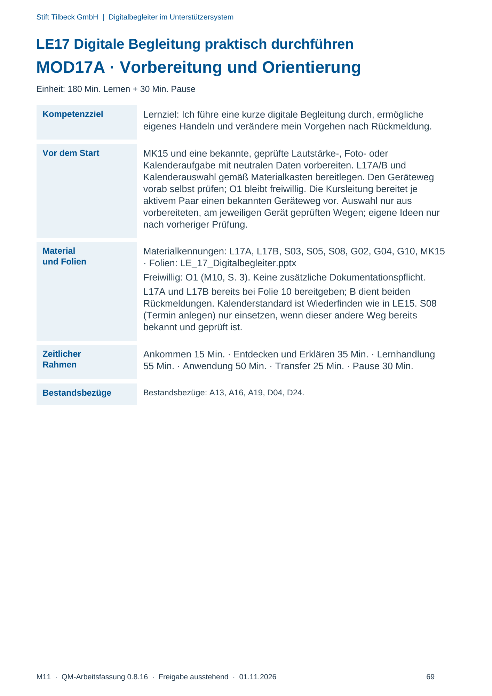
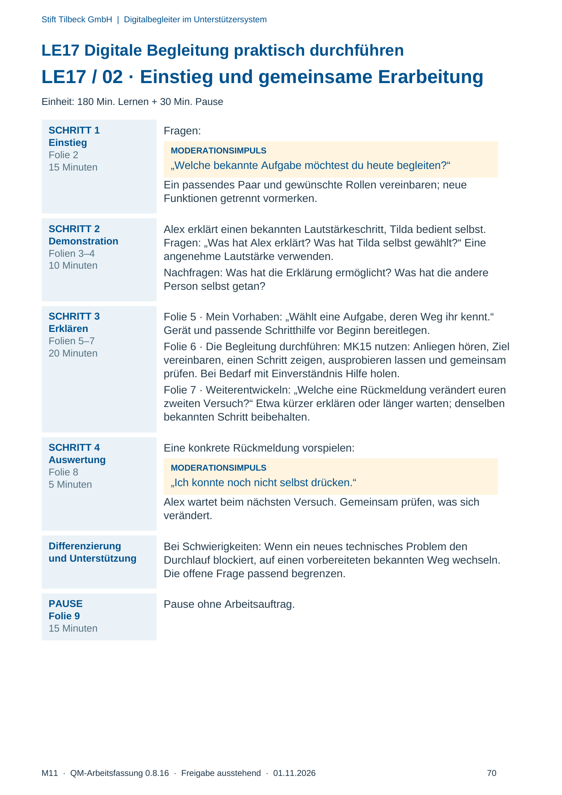
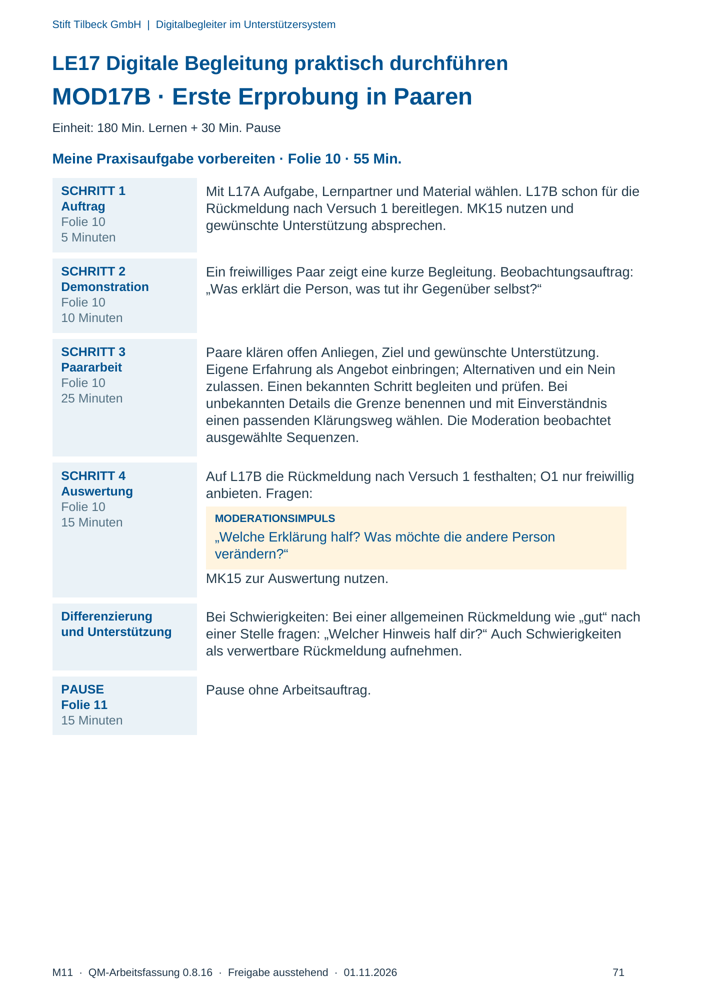
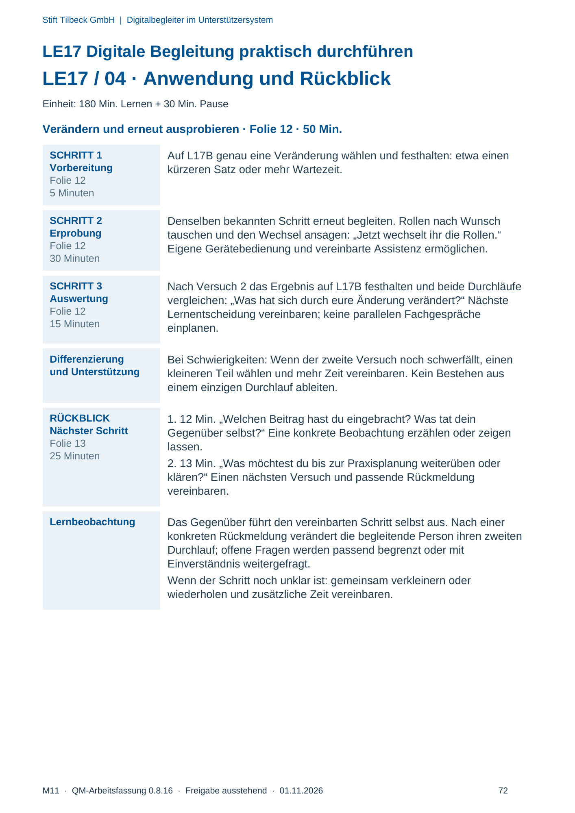

M11 · Originalseite 69, 70, 71, 72
Durchführungshilfe
Gezielte Original-Druckauswahl.
Fragen und Ankreuzfelder werden auf dem Ausdruck bearbeitet. Die Lesefassung speichert keine Antworten.
Lesefassung · Seite 69
Stift Tilbeck GmbH | Digitalbegleiter im Unterstützersystem
LE17 Digitale Begleitung praktisch durchführen
MOD17A · Vorbereitung und Orientierung
Einheit: 180 Min. Lernen + 30 Min. Pause
Kompetenzziel Lernziel: Ich führe eine kurze digitale Begleitung durch, ermögliche
eigenes Handeln und verändere mein Vorgehen nach Rückmeldung.
Vor dem Start MK15 und eine bekannte, geprüfte Lautstärke-, Foto- oder
Kalenderaufgabe mit neutralen Daten vorbereiten. L17A/B und
Kalenderauswahl gemäß Materialkasten bereitlegen. Den Geräteweg
vorab selbst prüfen; O1 bleibt freiwillig. Die Kursleitung bereitet je
aktivem Paar einen bekannten Geräteweg vor. Auswahl nur aus
vorbereiteten, am jeweiligen Gerät geprüften Wegen; eigene Ideen nur
nach vorheriger Prüfung.
Material
und Folien
Materialkennungen: L17A, L17B, S03, S05, S08, G02, G04, G10, MK15
· Folien: LE_17_Digitalbegleiter.pptx
Freiwillig: O1 (M10, S. 3). Keine zusätzliche Dokumentationspflicht.
L17A und L17B bereits bei Folie 10 bereitgeben; B dient beiden
Rückmeldungen. Kalenderstandard ist Wiederfinden wie in LE15. S08
(Termin anlegen) nur einsetzen, wenn dieser andere Weg bereits
bekannt und geprüft ist.
Zeitlicher
Rahmen
Ankommen 15 Min. · Entdecken und Erklären 35 Min. · Lernhandlung
55 Min. · Anwendung 50 Min. · Transfer 25 Min. · Pause 30 Min.
Bestandsbezüge Bestandsbezüge: A13, A16, A19, D04, D24.
Originalseite ansehen

Lesefassung · Seite 70
Stift Tilbeck GmbH | Digitalbegleiter im Unterstützersystem
LE17 Digitale Begleitung praktisch durchführen
LE17 / 02 · Einstieg und gemeinsame Erarbeitung
Einheit: 180 Min. Lernen + 30 Min. Pause
SCHRITT 1
Einstieg
Folie 2
15 Minuten
Fragen:
MODERATIONSIMPULS
„Welche bekannte Aufgabe möchtest du heute begleiten?“
Ein passendes Paar und gewünschte Rollen vereinbaren; neue
Funktionen getrennt vormerken.
SCHRITT 2
Demonstration
Folien 3–4
10 Minuten
Alex erklärt einen bekannten Lautstärkeschritt, Tilda bedient selbst.
Fragen: „Was hat Alex erklärt? Was hat Tilda selbst gewählt?“ Eine
angenehme Lautstärke verwenden.
Nachfragen: Was hat die Erklärung ermöglicht? Was hat die andere
Person selbst getan?
SCHRITT 3
Erklären
Folien 5–7
20 Minuten
Folie 5 · Mein Vorhaben: „Wählt eine Aufgabe, deren Weg ihr kennt.“
Gerät und passende Schritthilfe vor Beginn bereitlegen.
Folie 6 · Die Begleitung durchführen: MK15 nutzen: Anliegen hören, Ziel
vereinbaren, einen Schritt zeigen, ausprobieren lassen und gemeinsam
prüfen. Bei Bedarf mit Einverständnis Hilfe holen.
Folie 7 · Weiterentwickeln: „Welche eine Rückmeldung verändert euren
zweiten Versuch?“ Etwa kürzer erklären oder länger warten; denselben
bekannten Schritt beibehalten.
SCHRITT 4
Auswertung
Folie 8
5 Minuten
Eine konkrete Rückmeldung vorspielen:
MODERATIONSIMPULS
„Ich konnte noch nicht selbst drücken.“
Alex wartet beim nächsten Versuch. Gemeinsam prüfen, was sich
verändert.
Differenzierung
und Unterstützung
Bei Schwierigkeiten: Wenn ein neues technisches Problem den
Durchlauf blockiert, auf einen vorbereiteten bekannten Weg wechseln.
Die offene Frage passend begrenzen.
PAUSE
Folie 9
15 Minuten
Pause ohne Arbeitsauftrag.
Originalseite ansehen

Lesefassung · Seite 71
Stift Tilbeck GmbH | Digitalbegleiter im Unterstützersystem
LE17 Digitale Begleitung praktisch durchführen
MOD17B · Erste Erprobung in Paaren
Einheit: 180 Min. Lernen + 30 Min. Pause
Meine Praxisaufgabe vorbereiten · Folie 10 · 55 Min.
SCHRITT 1
Auftrag
Folie 10
5 Minuten
Mit L17A Aufgabe, Lernpartner und Material wählen. L17B schon für die
Rückmeldung nach Versuch 1 bereitlegen. MK15 nutzen und
gewünschte Unterstützung absprechen.
SCHRITT 2
Demonstration
Folie 10
10 Minuten
Ein freiwilliges Paar zeigt eine kurze Begleitung. Beobachtungsauftrag:
„Was erklärt die Person, was tut ihr Gegenüber selbst?“
SCHRITT 3
Paararbeit
Folie 10
25 Minuten
Paare klären offen Anliegen, Ziel und gewünschte Unterstützung.
Eigene Erfahrung als Angebot einbringen; Alternativen und ein Nein
zulassen. Einen bekannten Schritt begleiten und prüfen. Bei
unbekannten Details die Grenze benennen und mit Einverständnis
einen passenden Klärungsweg wählen. Die Moderation beobachtet
ausgewählte Sequenzen.
SCHRITT 4
Auswertung
Folie 10
15 Minuten
Auf L17B die Rückmeldung nach Versuch 1 festhalten; O1 nur freiwillig
anbieten. Fragen:
MODERATIONSIMPULS
„Welche Erklärung half? Was möchte die andere Person
verändern?“
MK15 zur Auswertung nutzen.
Differenzierung
und Unterstützung
Bei Schwierigkeiten: Bei einer allgemeinen Rückmeldung wie „gut“ nach
einer Stelle fragen: „Welcher Hinweis half dir?“ Auch Schwierigkeiten
als verwertbare Rückmeldung aufnehmen.
PAUSE
Folie 11
15 Minuten
Pause ohne Arbeitsauftrag.
Originalseite ansehen

Lesefassung · Seite 72
Stift Tilbeck GmbH | Digitalbegleiter im Unterstützersystem
LE17 Digitale Begleitung praktisch durchführen
LE17 / 04 · Anwendung und Rückblick
Einheit: 180 Min. Lernen + 30 Min. Pause
Verändern und erneut ausprobieren · Folie 12 · 50 Min.
SCHRITT 1
Vorbereitung
Folie 12
5 Minuten
Auf L17B genau eine Veränderung wählen und festhalten: etwa einen
kürzeren Satz oder mehr Wartezeit.
SCHRITT 2
Erprobung
Folie 12
30 Minuten
Denselben bekannten Schritt erneut begleiten. Rollen nach Wunsch
tauschen und den Wechsel ansagen: „Jetzt wechselt ihr die Rollen.“
Eigene Gerätebedienung und vereinbarte Assistenz ermöglichen.
SCHRITT 3
Auswertung
Folie 12
15 Minuten
Nach Versuch 2 das Ergebnis auf L17B festhalten und beide Durchläufe
vergleichen: „Was hat sich durch eure Änderung verändert?“ Nächste
Lernentscheidung vereinbaren; keine parallelen Fachgespräche
einplanen.
Differenzierung
und Unterstützung
Bei Schwierigkeiten: Wenn der zweite Versuch noch schwerfällt, einen
kleineren Teil wählen und mehr Zeit vereinbaren. Kein Bestehen aus
einem einzigen Durchlauf ableiten.
RÜCKBLICK
Nächster Schritt
Folie 13
25 Minuten
1. 12 Min. „Welchen Beitrag hast du eingebracht? Was tat dein
Gegenüber selbst?“ Eine konkrete Beobachtung erzählen oder zeigen
lassen.
2. 13 Min. „Was möchtest du bis zur Praxisplanung weiterüben oder
klären?“ Einen nächsten Versuch und passende Rückmeldung
vereinbaren.
Lernbeobachtung Das Gegenüber führt den vereinbarten Schritt selbst aus. Nach einer
konkreten Rückmeldung verändert die begleitende Person ihren zweiten
Durchlauf; offene Fragen werden passend begrenzt oder mit
Einverständnis weitergefragt.
Wenn der Schritt noch unklar ist: gemeinsam verkleinern oder
wiederholen und zusätzliche Zeit vereinbaren.
Originalseite ansehen
